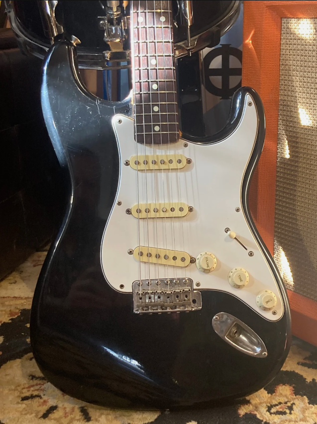

Squier by Fender ST-362 1986 - Black
$669.00
1986 "A Serial Number" Squier by Fender ST-362
Made in Japan
These were very similar to a '62 Reissue but with Gotoh tuners and two string trees
The Gotohs have been switched out for vintage style
It has plenty of cosmetic wear but it's a great player with no structural issues
Electronics look to be original from what I can tell